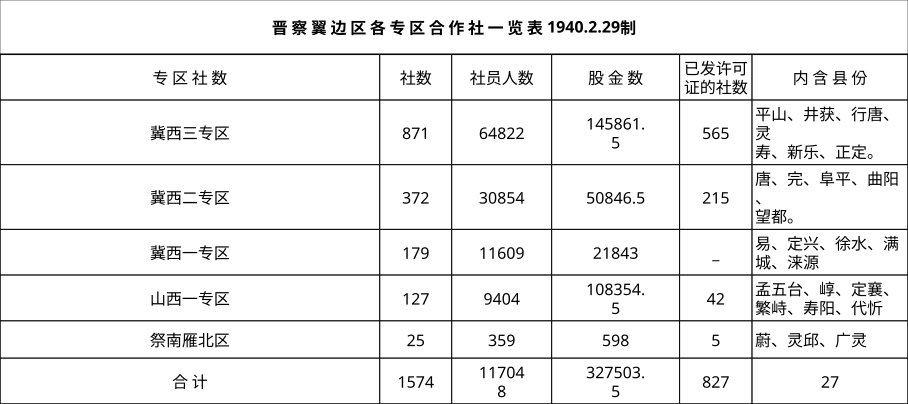

首页
一、陕甘宁革命根据地(1934-1949)
前言
统计
1.1 行政区划
1.2 人口
1.2.1 陕甘宁边区各县区划人口统计表(1941年2月20日)
1.2.2 葭县城关区一、二、三乡阶级构成(1943年)
1.3 价格
1.3.1 延安市粮价与物价(1937-1943年)
1.3.2 延安市逐月分类别物价指数(1941-1942年)
1.3.3 延安市物价总指数表（1937-1945）
1.3.4 根据地历年米价统计（1941年-1947年）
1.4 人民生活
1.4.1 各分区每人存粮表（1947年）
1.5 财政
1.5.1 财政概算收支比较表
1.5.2 陕甘宁边区历年财政收支对照表
1.5.3 陕甘宁边区历年财政岁出分类统计表
1.5.4 陕甘宁边区历年财政岁入分类统计表
1.5.5 岁入分类统计表
1.6 税收
1.6.1 根据地全年税收报告表（1946年）
1.6.2 根据地各月税收总结表（1946年）
1.6.3 根据地全年税收报告表（1947年）
1.6.4 根据地各月税收总结表（1947年）
1.7 自然灾害
1.8 对外经济贸易
1.8.1 根据地各年进口货物统计表（1944年-1946年）
1.8.2 根据地各年重要土产出口统计（1944一1946年）
1.8.3 根据地主要物资出口统计（1944年-1946年）
1.8.4 全年入境货物统计表（1946年）
1.9 农业
1.9.1 陕甘宁边区农业统计（1936-1945年）
1.9.2 陕甘宁边区各分区农作物种类及种植面积比例（1943年）
1.9.3 陕甘宁边区各分区农作物种类及种植面积比例（1944年）
1.10 工业
1.10.1 民间纺织业发展统计(1942-1944年)
1.11 商业
1.11.1 延安市私营商户统计（1937-1944）
1.12 运输业
1.13 合作社
1.13.1 边区合作社发展概况统计(1937年—1944年3月)
1.13.2 边区各分区合作社发展情况统计(1944年)
1.14 金融业
1.14.1 边币发行额统计表（1940年12月-1944年2月）
1.15 公共管理
1.15.1 根据地违禁走私统计表（1945年1月-10月）
1.16 其他
1.16.1 陕甘宁边区气候统计（1940-1945年）
调查
2.1 调查一
2.2 调查二
参考文献
二、晋绥革命根据地
内容建设中...
三、晋察冀边区
前言
统计
1.1 行政区划
1.1.1 晋察冀行政区人口统计表（1944.11）
1.1.2 晋察冀边区冀东办事处所辖各县区划表1（1940年1月）
1.1.3 1946年7月27日边委会民政处公布的晋察冀边区所辖专区县统计表
1.2 价格
1.2.1 各个时期发行倍数与购买力倍数变化表
1.2.2 物价指数统计表
1.2.3 北岳区边币、物价与人口比数统计分析表
1.2.4 二专区境内抗战历年粮布价格与边币银币比较表
1.2.5 晋察冀边区一九四一、二年主要物价及货币比值统计表 (附表一)
1.2.6 几 个 物 价 表
1.2.7 边区一九四○年度七月份主要物品价格统计表(元)
1.2.8 边区一九四○年度八月份主要物品价格统计表(元) （单位：元）
1.2.9 晋察冀边区一九四○年九月份主要物价统计表
1.2.10 晋察冀边区一九四〇年九月份主要物价
1.2.11 晋察冀边区一九四○年度下半年物价指数表 一九四一年一月二十八日 六月份-基数
1.2.12 晋察冀边区一九四〇年度下半年物价指
1.2.13 物 价 主 表 (1944 、1、10)
1.2.14 物 价 主 表
1.2.15 物 价 副 表
1.2.16 民国三十年度北岳区各县统累稅征收中主要物品价格变动情形
1.2.17 中心地区和边沿地区物价变化统计表
1.2.18 敌区物价表二敌区物价变化统计表
1.2.19 历年边币发行与购买力变化表（表2）
1.2.20 历年货币发行与购买力变化表
1.3 金融业
1.3.1 边币实际购买力情况
1.3.2 北岳区民国三十一年年度各县救灾粮款表
1.3.3 贸易资金对比-一区二区
1.3.4 万有纸厂月结累计收支对照表*
1.3.5 万有纸厂(由开工至结束)损益表
1.3.6 万有纸厂资产负债对照表
1.3.7 第四专区游击区敌我市场现状一览表 1944.1
1.3.8 货 币 比 值 表
1.3.9 北岳区各县统累稅征收中货币比值变动情形
1.3.10 统累税征收中贷款与收回数目统计表
1.3.11 晋察冀边区各机关团体部队及各界人士救国献金统计表
1.3.12 各专区货币比值变化统计表
1.3.13 北岳区各县原分配放款数字与实际放出数字比较表
1.3.14 行唐贷款成分用途表
1.3.15 民国卅一年春耕贷款到期年月与收回情况表
1.3.16 第四专区游击区敌我市场现状一览表
1.3.17 历年边币发行与购买力变化表（表1）
1.3.18 1947年利息统计表
1.3.19 冀东支行1947年2月时行员、性别、年龄、出身情况表
1.3.20 成份、文化、参加银行年数表
1.3.21 1946年9月晋察冀边区银行机构入数统计
1.3.22 晋察冀边区银行货币发行统计数
1.3.23 1942年9月9日伪币情况资料
1.4 租佃与债务
1.4.1 抗日根据地三阶段工作对比表
1.4.2 杜岭村人口、土地与牲畜债务情况统计表
1.4.3 十八盘村阶级、土地与牲畜债务情况统计表
1.4.4 黄槐峪村阶级、土地与牲畜债务情况统计表
1.4.5 地租明细-1938-1945
1.4.6 处理各种问题数量比较表（不完整统计）
1.4.7 安平县六区死契地赎回的情形
1.4.8 安国五个区的统计（减租后）
1.4.9 新乐牛素庄（去年减租后）统计表
1.4.10 租佃形式比较表（从减租中的统计）
1.4.11 龙崇赤九、十区地租形态比较表（减租中的统计）
1.4.12 龙延怀减租的区村数统计表
1.4.13 龙崇赤减租统计表
1.4.14 龙赤减租统计表
1.4.15 减租情况统计表
1.4.16 龙崇赤清理旧债统计表
1.4.17 龙赤清理旧债统计表
1.4.18 表一、灵寿一区刘家浦
1.4.19 龙崇赤联合县减租统计表
1.4.20 龙延怀联合县减租的区村数统计表
1.5 阶级构成
1.5.1 兴旺寨村阶级与土地经营情况统计表
1.5.2 大营各寨村阶级、土地与生产情况统计表
1.5.3 大安口村阶级、土地经营与生产情况统计表
1.5.4 沙坡峪村阶级与土地占有情况统计表
1.5.5 抗战前后各阶级人数变化统计表
1.5.6 肃宁顶汪村各阶层抗战以来买卖土地统计表
1.5.7 阶层土地分布统计表
1.5.8 天津近郊华庄子村（地太薄，每人有八亩地才能生活）
1.5.9 任邱东大坞村从抗战到今年各阶级变动表
1.5.10 建国六区 ×× 村（落后的白点村）土地分散情形表
1.5.11 献县陌南村土地分布散情形统计表
1.5.12 北岳区平山、行唐、完县、唐县八个支部由一九三七年十二月到一九四一年七月党员成分变动表
1.5.13 陕甘宁边区1937-1942年阶层人口户数变化表
1.5.14 买卖地-抽地-游击区-当地
1.5.15 阶层分布及土地占有情况表
1.5.16 地主富农与贫农中农土地分配对比表
1.5.17 抗战前（1937）各阶层人口、土地劳动力百分比分配表
1.5.18 1937年与1945年土地阶级情况比较表
1.5.19 1937-1945年农业负担统计表
1.5.20 各阶层土地买卖情况统计表
1.5.21 北岳区八个村户口人口标准亩比较表
1.5.22 十一个村庄贫农人口占村人口百分数比较表（表一）
1.5.23 任家庄村各阶层人口比例与负担情况统计表（表四）
1.5.24 晋中区统累稅代表村代表户各阶层再生产消费负担分配表
1.5.25 人口统计表
1.5.26 六专区未分别阶层统计故未列入。
1.5.27 土地统计表
1.6 土地占有
1.6.1 唐县二区中窖沟村四户生产情状比较表
1.6.2 任丘-献县-河区地亩统计表
1.6.3 民国三十三年年度北岳区扩大耕地面积统计表
1.6.4 民国三十三年度北岳区水利建设统计表（表二）
1.6.5 北岳区四十二个村两年产量比较表（表三）
1.6.6 平地用工工数统计表
1.6.7 北岳区历年水利建设统计表
1.6.8 六个区一一九个村的统计
1.6.9 抗战前后农村经济概况对照表
1.6.10 乡村生产与人口统计表 (1937-1945)
1.6.11 沟子口候村 统计表
1.6.12 榆次两个村庄战前战后比较表
1.6.13 1937-1942年户数与土地占比统计
1.6.14 北岳区五个村庄土地关系简表
1.6.15 任家庄村土地种类使用概括（表二）
1.6.16 唐县各区平均数字表（表一）
1.6.17 行唐各区平均数字表（表二）
1.7 人口
1.7.1 晋察冀边区区域面积人口统计表（1944.11）
1.7.2 纺织业-荆货业-磨坊业-小商业-1937-1942年
1.7.3 各专区缺粮户数对比表
1.7.4 宛县一、二两区人民生活统计表
1.7.5 北岳区出人口货物分类处理表
1.7.6 晋察冀边区北岳区入口货物分类处理表
1.7.7 税收统计表
1.7.8 北岳区五个村纳税与非纳税户数人口及每人负担分数
1.7.9 任家庄村纳税人口富力分数统计表（表三）
1.8 人民生活
1.8.1 冀晋区合作社信用存根统计表
1.8.2 晋察冀边区本产货物出口分类处理表
1.8.3 民国三十年度公粮完成数占分配数百分比及占原分配数减灾后百分比表
1.8.4 政府粮食部门组织编制表
1.8.5 三专区商店设置情形表
1.8.6 1942年北岳区查获出入口私货统计表
1.8.7 边区财政开支状况
1.9 财政
1.9.1 民国27-30年开支数变化表
1.9.2 民国27-30年收支比较统计表
1.9.3 民国二十七至三十一年公粮收支概况表
1.9.4 边委会民国三十一年年度拨发北岳区各县赈粮赈款表
1.9.5 边区一至五月份出入口税收与开支费用比较表
1.9.6 一九四二年各机关托购货物与完成情形对比表 (附表十三)
1.9.7 安平崔安铺不同时期对敌各项开支比较表
1.9.8 对敌开支项目比较表
1.9.9 边区财政收入情况（以1938年为100）
1.10 税收
1.10.1 一九四一年至一九四四年税额变化
1.10.2 一九四二年税收统计表 (附表六)
1.10.3 一九四二年各商店配合统累税征收吸收游击区物资统计表(附表十四)
1.10.4 村合理负担分数表
1.10.5 合理负担分数简便计算表
1.10.6 民国三十年度北岳区各县统一累进税款完成与解库统计表
1.10.7 民国三十年度北岳区各县损失统一累进税款统计表
1.10.8 民国三十年度北岳区各县统累税款损失经过分类统计
1.10.9 对敌对我负担比例统计表
1.11 对外经济贸易
1.11.1 晋察冀边区外贸入口分类处理表
1.11.2 晋察冀边区冀中区出口货物分类处理表
1.11.3 晋察冀边区冀中区入口货物分类处理表
1.11.4 敌 货 鉴 别 表
1.11.5 晋察冀边区北岳区出口货物分类处理表
1.11.6 北岳区入口货物分类处理表
1.11.7 平山专区各县合作社贸易局概况表
1.11.8 各专区商店春季各项货物营业比重分析统计
1.11.9 一九四一年以前贸易管理局组织概况(附表二)
1.11.10 一九四二年查获出入口私货统计表 (附表七)
1.12 农业
1.12.1 冀晋区施肥比较表
1.12.2 农林畜殖局计算表
1.12.3 放债与收租情况统计表
1.12.4 1944年施肥变化情况统计表
1.12.5 牲畜施肥情形的比较
1.12.6 春耕生产统计表
1.12.7 二专各县粮换布比较表
1.12.8 (一)贷布人数布数金额统计表
1.13 工业
1.13.1 三四五专区纺织人数统计
1.13.2 从业情况统计表
1.13.3 边 区 各 县 煤 矿 统 计 表
1.13.4 化学厂组织机构表
1.13.5 冀晋区合作社半年来生产作坊状况统计表
1.14 商业
1.14.1 新商店组织设置业务性质分析统计 附表三
1.14.2 商店营业性质及生产种类统计
1.14.3 商店变公营为公私合营执行检讨比较表(以一店为单位)
1.14.4 北岳区商店一九四二年状况一览表(附表三)
1.14.5 一九四二年商店代收军需原料统计表(附表十五)
1.14.6 1946年5月冀中分行机构统计表
1.15 合作社
1.15.1 晋察冀边区合作社分类统计表（民国二十九年七月十八日）
1.15.2 民国三十三年北岳区合作社发展比较表
1.15.3 边区合作社历年发展表
1.15.4 各专区社数比较表
1.15.5 晋 察 翼 边 区 各 专 区 合 作 社 一 览 表 1940.2.29制
1.15.6 边 区 各 县 合 作 社 统 计 表 1940.2.29制
1.15.7 北岳区合作社分类统计表* 一九四○年七月十八日制
1.15.8 晋察冀边区二十九年度八月份合作社统计表
1.15.9 晋察冀边区各县合作社统计表
1.15.10 一九四一年年底北岳区合作社数量统计表
1.15.11 冀晋区合作社半年来发展状况统计表 (一九四五年一月至六月)
1.16 公共管理
1.16.1 冀中区民兵五年来成绩统计表（民国27年﹣11年）
1.16.2 北岳区民兵五年来成绩统计表 （民国27年-31年） (2)
1.16.3 县政权公杂费及工作员津贴制度
1.17 其他
1.17.1 四专区各县小麦产量比较表
1.17.2 民国27-30年收入构成及总量变化表
1.17.3 会员数量变化统计-2023
1.17.4 新订产量与租实交数统计表
1.17.5 村庄整治情况统计表
1.17.6 1937-1942年铁木机数量统计
1.17.7 随机排列法
1.17.8 民国三十三年度北岳区耕畜补充统计表
1.17.9 解放区村庄生产情况对比表
1.17.10 植棉
1.17.11 游击区开展生产情况表
1.17.12 龙塘赤高低租额统计表
1.17.13 出绊布匹工资统计表
1.17.14 万有纸广固定设备物工具家俱详表
1.17.15 二专区各县植棉亩数产量统计表
1.17.16 敌 贸 鉴 别 表
1.17.17 (不完全) ( 附 表 2 )
1.17.18 冀中军区1945年7月至9月份经费予算表
1.17.19 冀中区政民人数统计表
调查
2.1 价格
2.1.1 一九四二年阜平灵寿县平山盂县四种山货调查表 (附表九)
2.2 租佃与债务
2.2.1 龙延怀租额高低典型户调查表
2.2.2 龙赤租额高低的典型户调查表
2.2.3 民户合理负担比例分数调查简表
2.2.4 表二、一区贾峪村典型户调查表
2.2.5 表五、四区刘家庄典型户收入与负担情形调查表
2.3 阶级构成
2.3.1 表三、三区东杨山各阶层负担情形调查表
2.3.2 表四、第四区上邵村全村负担调查表
2.4 土地占有
2.4.1 民国卅一年统累稅调查村与改算村平均数字比较表（表三）
2.5 人口
2.5.1 完县一、二区人民生活统计（3月初的调查）
2.6 人民生活
2.6.1 灾民数目 (调查)
2.6.2 纺 织 工 厂 调 查 表
2.6.3 第四专区巩固区市场调查概况一览表 1944.1.
2.7 税收
2.7.1 民国三十二年各县调查工作要求标准比较表
2.7.2 敌我八个月负担统计
2.8 对外经济贸易
2.8.1 一九四二年雁北与阜平主要物资调剂调查表 (附表八)
2.9 工业
2.9.1 边区各县金属矿产调查表
2.9.2 边区各县非金属矿产调查表
2.9.3 毛 口 袋 调 查 表
2.9.4 造纸厂调查表
2.9.5 工具制造厂调查表
2.9.6 毛皮工厂调查表
2.9.7 七县油坊调查表
2.9.8 晋察冀边区1942年造纸厂调查表
2.10 合作社
2.10.1 油 房 调 查 表
2.11 公共管理
2.11.1 二十九个英模所在村支部领导生产情况调查
2.11.2 支局各卡组织干部统计
2.12 其他
2.12.1 县委领导大生产情形调查
2.12.2 冀中土布产销调查表
2.12.3 革柏厂调查表
2.12.4 水磨调查表
2.12.5 胰 厂 调 查 表
2.12.6 一九四二年边区药材产量调查表(附表十)
